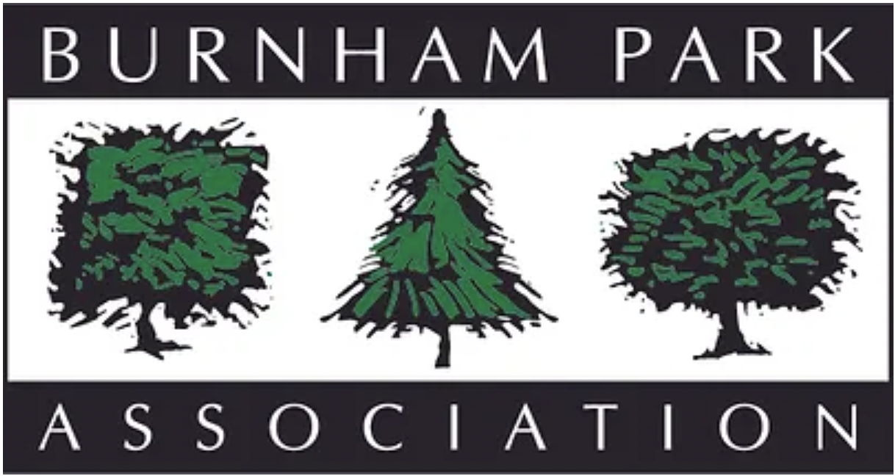

During the fall of 2023, I supervised a group of six in redesigning the Burnham Park Association website. The goal was to make the website more modern, and to reorganize the website’s content for easier navigation.